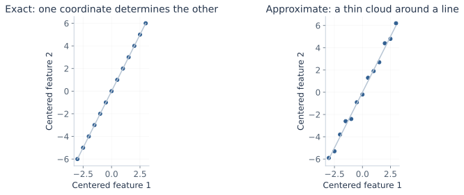
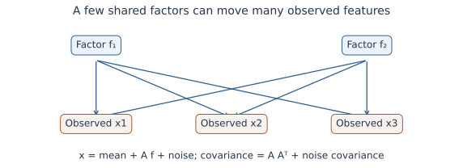
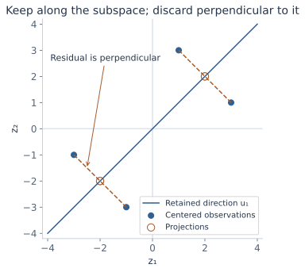
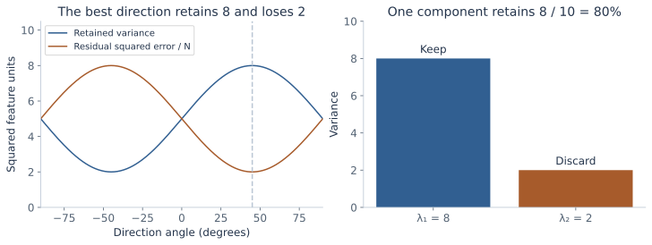
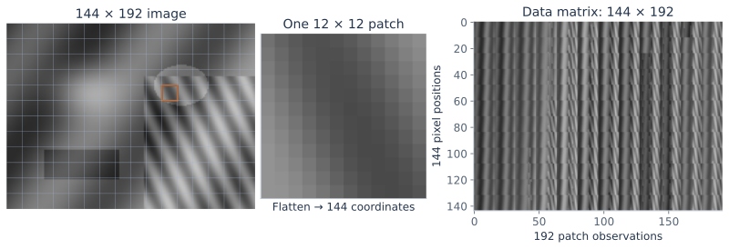
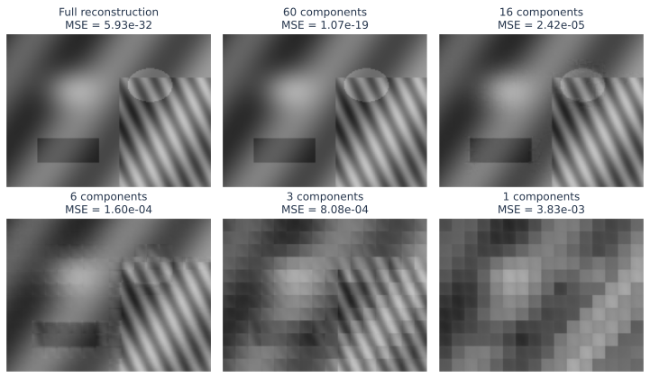
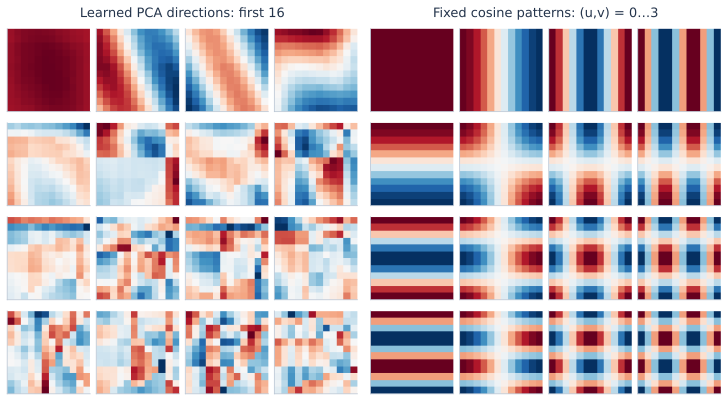
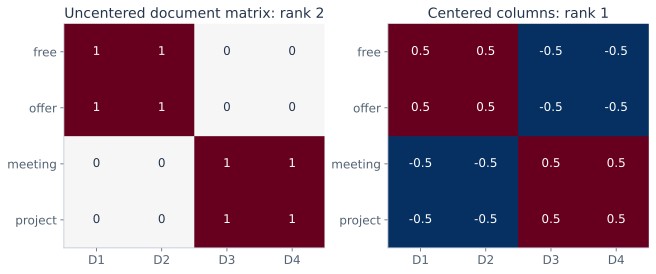
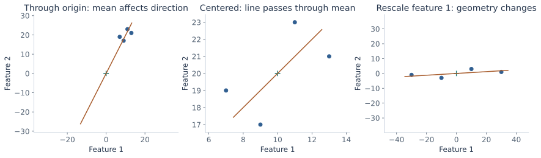

Factor models and PCA,
finding the smaller space.
Describe many measurements with a few coordinates. Derive the best linear reconstruction, understand its eigenvectors, and see what compression keeps and loses.
The previous chapter simplified feature dependence by conditioning on a class. Here there may be no class labels. We instead ask whether dependent measurements can be explained by a much smaller set of hidden coordinates. That question connects factor models, principal component analysis, image compression, and document representations.
The lectures introduce latent factors, centering, projection sketches, eigenfaces, a sequence of image-patch reconstructions, a cosine-basis comparison, and a document/topic interpretation. These notes join that continuation and supply the intervening algebra. Geometric PCA and a Gaussian latent-factor model will be distinguished throughout.
What you should be able to do afterward
- Explain how exact or approximate feature dependence relates to covariance, rank, and low-dimensional structure.
- Write a factor model with correct dimensions, derive its mean and covariance, and distinguish diagonal from isotropic noise.
- Center a dataset, project onto an orthonormal basis, and reconstruct in the original feature space.
- Derive PCA from squared reconstruction error and retained variance, including the eigenvector solution for one or several components.
- Calculate scores, reconstruction error, explained variance, rank limits, and a complete small numerical example.
- Connect PCA to singular value decomposition, eigenfaces, patch compression, cosine patterns, and document factorization.
- State the roles of scaling, training-only fitting, component selection, and the limits of a variance-based objective.
Reading route: sections 1–8 build the model and derive PCA. Sections 9–12 calculate and explore it. Sections 13–17 connect the lecture's applications. Sections 18–20 separate related models and explain practical choices. The practice problems and revision sheet then test the same ideas.
Contents · choose a section
1. Many features can share very few degrees of variation
Lecture connection: approximately linearly dependent features, high-dimensional data, and the covariance/inverse warning.
An observation \(x_i\in\mathbb R^d\) contains d measurements. A grayscale image can have one coordinate per pixel; a document can have one per vocabulary word. Video, medical images, 3D/4D measurements, customer purchases, and website interactions can all have many coordinates. The number of coordinates need not equal the number of independently varying causes.
For example, suppose the centered features always satisfy \(z_2=2z_1\). Every point lies on a line in the plane. Knowing the first coordinate determines the second. The vector \(v=(-2,1)^T\) satisfies \(v^Tz=0\), so variation in that direction is zero. One coordinate along the line can describe each centered point exactly.
If a nonzero v gives zero variance, the covariance matrix is singular. More precisely, zero variance means that \(v^Tx\) is constant with probability one; after centering it is zero. Approximate dependence gives a small variance in some direction, which may make inversion unstable even when the matrix is technically invertible. Ordinary correlation between a pair of features alone does not establish exact rank deficiency.

There is also a sampling issue. With N centered observations, the sample covariance has rank at most \(\min(d,N-1)\), because their centered columns sum to zero. A singular estimate when d is large relative to N is therefore not proof that the population itself has exactly redundant features. The distinction matters for the Gaussian covariance estimates developed earlier.
2. Build an observation from latent factors
Lecture connection: the handwritten model, loading-matrix columns, factor coordinates, and residual minimization.
A linear factor representation writes:
| Quantity | Shape | Meaning |
|---|---|---|
| \(x_i,\mu,\varepsilon_i\) | \(d\times1\) | Observation, shared mean, and residual/noise. |
| A | \(d\times k\) | Shared loading matrix: maps factor coordinates into observed coordinates. |
| \(f_i\) | \(k\times1\) | Coordinates for observation i, often with k much smaller than d. |
| \(a_\ell\) | \(d\times1\) | One loading direction, shared across observations. |
The subscript i selects an observation; the subscript ℓ selects a factor. Expanding the matrix product makes the interpretation concrete:
Each factor coordinate scales one shared direction; their sum describes an observation's departure from the mean. The loading matrix is learned once for the dataset, while each observation has its own coordinates. “Latent” means those coordinates are not directly observed; it does not mean each coordinate has an identifiable real-world meaning.

For a small calculation, take \(\mu=(2,3,1)^T\), \(a_1=(1,0,1)^T\), \(a_2=(0,1,1)^T\), and \(f_i=(2,-1)^T\). With zero residual, \(x_i=\mu+2a_1-a_2=(4,2,2)^T\). Three observed coordinates were constructed from two factors plus a fixed mean.
Without additional constraints, the factorization is not unique: for any invertible \(k\times k\) matrix R, \(A f_i=(AR)(R^{-1}f_i)\). This freedom changes the coordinate system while preserving reconstructed observations. We will choose an orthonormal basis when solving geometric PCA.
3. What the Gaussian factor assumptions add
Lecture connection: standard-normal factors, diagonal noise in an annotation, and isotropic noise in the displayed factor-model slides.
A representation becomes a probabilistic model when distributions are specified. Assume independent observations and, within each observation:
Independence between the factor and noise is needed for the following covariance simplification. Using the affine Gaussian and covariance identities:
The cross-covariances vanish because the independent terms have zero means. Gaussianity then makes their affine sum Gaussian. Without Gaussian assumptions the mean and covariance formulas still hold under the same finite-moment and zero cross-covariance conditions, but the marginal distribution need not be Gaussian.
For diagonal \(\Psi=\operatorname{diag}(\psi_1,\ldots,\psi_d)\), different observed coordinates have their own noise variances. Conditional on f, the Gaussian noise coordinates are independent. Observed coordinates are generally dependent after the shared factors are integrated out. In particular, for distinct j,r, their covariance is \(\sum_\ell A_{j\ell}A_{r\ell}\).
The displayed lecture model uses the more restrictive isotropic \(\Psi=\sigma^2I_d\): every direction has the same noise variance. With \(\sigma^2>0\), the covariance is positive definite even when A has rank k<d; with zero noise it has rank at most k. A low-rank signal therefore need not imply a singular noisy observation distribution.
Standard-normal factors remove arbitrary factor scaling from the probabilistic model, but an orthogonal rotation remains invisible: \((AR)(AR)^T=AA^T\) when \(R^TR=I\), and \(R^Tf\) is again standard normal. The data covariance alone does not identify a unique set of named latent causes.
Two objectives to keep distinct: minimizing reconstruction residuals over free coordinates is a geometric problem. Maximizing a marginal Gaussian likelihood integrates out random factors and includes a covariance determinant. The common equation \(x=\mu+Af+\varepsilon\) does not make those fitting criteria identical.
4. Move the origin to the training mean
Lecture connection: zero-mean assumption, subtraction of the mean, and the sample-mean estimate.
PCA describes variation around a mean. Compute the feature-wise training mean and center every observation:
Each feature gets its own mean. For images, this is a mean value at each pixel position across observations, rather than necessarily one scalar image brightness. For patch observations it is one mean for each position within a patch.
Why choose the sample mean? For any proposed offset µ, expanding squared distances gives:
The cross term vanishes because the centered vectors sum to zero. Thus the sample mean minimizes the squared distance to a constant reconstruction. It is also the Gaussian mean MLE under the usual nonsingular common-covariance model from the previous notes.
For a fixed orthogonal projector P onto a subspace, the error of an affine reconstruction is \(\sum_i\|(I-P)(x_i-\mu)\|^2\). Its offset-dependent part is \(N\|(I-P)(\mu-\bar x)\|^2\). Choosing \(\mu=\bar x\) is optimal; shifting µ along the retained subspace gives the same affine set and error. This explains why the PCA plane can always be taken to pass through the mean.
Without centering, a through-origin approximation uses the second-moment matrix:
The extra mean outer product can change the leading direction. The uncentered problem is mathematically valid, but it optimizes energy about the original origin rather than variance about the mean. We will use S with denominator N throughout. Replacing N by N−1 rescales all eigenvalues equally, leaving principal directions and explained-variance ratios unchanged.
5. Coordinates, projection, and reconstruction are different objects
Choose k orthonormal columns \(U=[u_1\cdots u_k]\in\mathbb R^{d\times k}\), meaning \(U^TU=I_k\). A dot product \(u_\ell^Tz\) measures the signed coordinate along one unit direction. The reduced coordinates, reconstructed vector, and residual are:
The coordinate t has k entries; the reconstruction and residual each have d. Returning to the original scale adds the mean: \(\hat x=\bar x+UU^T(x-\bar x)\). Keeping a few coordinates is useful because the shared basis tells us how to decode them.
Derive the best coordinates for a fixed basis
The Hessian is \(2I_k\), so this is the unique minimum for the coordinates. The residual obeys \(U^Tr=0\): every retained direction is perpendicular to it. Consequently:

The projector \(P=UU^T\) is symmetric and idempotent: \(P^T=P\), \(P^2=P\). It is d×d and has rank k; \(U^TU=I_k\) does not imply \(UU^T=I_d\) unless k=d. If a full-column-rank loading matrix A is not orthonormal, least squares instead gives \(t=(A^TA)^{-1}A^Tz\) and \(P=A(A^TA)^{-1}A^T\). Simply transposing an arbitrary A is insufficient. Rank-deficient A requires a pseudoinverse or another basis for its column space.
6. Turn reconstruction error into retained variance
Lecture connection: choose the basis and per-observation factors to minimize the sum of squared residuals.
Collect centered observations as columns in \(Z=[z_1\cdots z_N]\in\mathbb R^{d\times N}\). A geometric rank-k approximation chooses a shared basis and coordinates. Any k-dimensional subspace has an orthonormal basis, so using U loses no candidate subspaces. For a fixed U we already know the optimal coordinates. Substitute them:
The Pythagorean identity says each error is the original squared length minus its retained squared length. Summing and using \(S=ZZ^T/N\) gives:
The trace is the sum of diagonal entries. Here \(\operatorname{tr}(S)=\sum_j S_{jj}\) is total feature variance, and the ℓth diagonal of \(U^TSU\) is the variance of the ℓth projected coordinate. In detail, \(\frac1N\sum_i(u_\ell^Tz_i)^2=u_\ell^TSu_\ell\). Summing these identities gives the trace formula.
The first term does not depend on U. Minimizing reconstruction error therefore equals maximizing retained variance, subject to orthonormality. The orthonormal constraint prevents choosing the same direction repeatedly or multiplying a direction by a huge number just to inflate its coordinate values.
7. Why the first component is an eigenvector
For one retained direction, the optimization is the Rayleigh-quotient problem:
A covariance matrix is symmetric and positive semidefinite. Symmetry means its entry (j,r) equals (r,j); positive semidefiniteness follows from \(v^TSv=\frac1N\sum_i(v^Tz_i)^2\ge0\). The real symmetric spectral theorem gives an orthonormal eigenbasis \(q_1,\ldots,q_d\), with \(Sq_j=\lambda_jq_j\). Order the eigenvalues \(\lambda_1\ge\cdots\ge\lambda_d\ge0\). An eigenvector is a direction that the linear map S only scales.
A Lagrange multiplier for unit length gives the stationary condition:
Every stationary direction is an eigenvector. That condition alone does not say which one maximizes the objective. Expand any unit vector as \(u=\sum_j c_jq_j\), where \(\sum_jc_j^2=1\). Then:
Choosing \(u=q_1\) attains this upper bound. The largest eigenvalue is the largest possible projected variance; its eigenvector is a first principal direction. A smaller-eigenvalue stationary point solves the eigen-equation too, but is not the desired maximum.
Changing the sign of u changes every score's sign, while \((-u)(-u)^T=uu^T\) leaves reconstruction unchanged. If the largest eigenvalue is repeated, any unit direction within its eigenspace is optimal. A computer returning a different sign or basis inside a tied eigenspace need not have found a different subspace.
8. Keep the top k directions, and account for what is lost
For k directions, take \(U_k=[q_1\cdots q_k]\). To see global optimality, write each eigenvector's weight in a candidate retained subspace as \(w_j=\|U^Tq_j\|^2\). Orthogonal projection gives \(0\le w_j\le1\), and \(\sum_jw_j=k\). The retained variance is:
The largest weighted sum puts the available k units of weight on the largest eigenvalues; moving weight from a smaller value to an available larger one cannot decrease the sum. The top-k eigenvectors attain that bound. Equivalently, after finding the first direction, maximize variance in the orthogonal complement to obtain the next one.
Thus PCA scores are uncorrelated on the centered training data. They are not automatically independent. Joint Gaussianity would make zero covariance imply independence; an arbitrary non-Gaussian dataset does not have that guarantee. The scores also need not have unit variance: their variances are the retained eigenvalues.
At k=0, reconstruct every observation as the mean. At k=d, an orthonormal full basis reconstructs every vector exactly, up to numerical rounding. Keeping all positive-eigenvalue directions reconstructs the training data exactly even when their rank is smaller than d; a new observation can still have a component outside that training span.
When \(\lambda_k>\lambda_{k+1}\), the retained top-k subspace is unique, although individual signs remain arbitrary. A tie across that boundary can make different k-dimensional subspaces equally good. If every eigenvalue is zero, all observations coincide after centering and no direction of variation is identified.
9. Work through a complete two-feature dataset
Consider these four invented observations, with columns representing features:
| i | \(x_i\) | \(z_i=x_i-\bar x\) | First score \(t_{i1}\) | One-component reconstruction |
|---|---|---|---|---|
| 1 | (7,19) | (−3,−1) | \(-2\sqrt2\) | (8,18) |
| 2 | (9,17) | (−1,−3) | \(-2\sqrt2\) | (8,18) |
| 3 | (11,23) | (1,3) | \(2\sqrt2\) | (12,22) |
| 4 | (13,21) | (3,1) | \(2\sqrt2\) | (12,22) |
The mean is (10,20). The centered squared feature sums are both 20, and the cross-product sum is 12. Therefore:
In two dimensions, eigenvalues solve \(\det(S-\lambda I)=0\). Here the determinant is \((5-\lambda)^2-9=(\lambda-8)(\lambda-2)\). Unit eigenvectors can be chosen as:
For the first observation, \(q_1^Tz_1=(-3-1)/\sqrt2=-2\sqrt2\). Multiplying that scalar by q₁ gives centered reconstruction (−2,−2); adding (10,20) gives (8,18). Its residual is (−1,1), with squared length 2. Each of the four residuals has that same squared length. Total squared error is 8, and error per observation is 2, exactly the discarded eigenvalue.
Total variance is 8+2=10. One component retains 80% and discards 20%. The per-observation squared error sums over both feature coordinates; the mean squared error per scalar feature entry is 8/(4×2)=1. These denominators describe different averages.
For a new observation x=(13,20), center it to z=(3,0). Its first score is \(3/\sqrt2\), reconstruction is (11.5,21.5), and residual is (1.5,−1.5), with squared length 4.5. The sample's discarded eigenvalue is an average training error, not a promise that each new point has error 2.

As a comparison, ordinary regression of feature 2 on feature 1 fits vertical residuals and has slope S₂₁/S₁₁=3/5. The PCA reconstruction line has slope 1 and minimizes orthogonal residuals in the chosen feature units. Reversing the regression changes its problem; PCA treats both features symmetrically within that Euclidean geometry.
10. Explore the projection rather than memorize its angle
Edit the two-dimensional observations below. The workbench compares a chosen line with the best line for the selected objective. In centered mode, the line passes through the fitted mean and the plotted points are centered. In through-origin mode, the plot uses raw coordinates and the objective is second-moment energy, not centered variance. The query is transformed and reconstructed using the same fitted offset.
Projection and error workbench
On a small screen, scroll the two-panel chart horizontally to inspect both panels.
Use 2–40 nonblank lines, each containing exactly two finite numbers in [−1000,1000], separated by a comma or whitespace. Query coordinates have the same bounds. The line angle is periodic over 180°. A tied top eigenvalue has no unique best direction. Text and calculations stay in this page.
For the default centered data, set θ to 0°: retained variance is 5 and residual error is 5. At 45°, those values become 8 and 2. Try identical observations: total centered variance becomes zero, so an explained-variance fraction has a zero denominator even though absolute reconstruction error is zero. Through-origin mode makes this distinction especially visible.
11. Choose k using an explicit error or variance target
The explained-variance ratio of component j is its eigenvalue divided by total variance. The cumulative retained fraction for k components is:
These fractions require a positive total variance. If all observations are identical, total centered variance is zero and the fractions are undefined. A scree plot displays the ordered eigenvalues; a cumulative curve displays Rₖ. A large drop can suggest a useful cutoff, but it does not prove there is one uniquely correct intrinsic dimension.
For a chosen threshold τ, choose the smallest k with \(R_k\ge\tau\). Equivalently, require a discarded-variance fraction no greater than 1−τ. In the worked example, an 80% target needs one component, while a 90% target needs two.
Define the error being constrained. With N observations and d coordinates, PCA's training sum of squared error is \(N\sum_{j>k}\lambda_j\); the average squared vector error is \(\sum_{j>k}\lambda_j\); the mean squared error per scalar entry is \(\frac1d\sum_{j>k}\lambda_j\). For centered data, dividing squared error by \(\sum_i\|z_i\|^2\) gives 1−Rₖ. Dividing by uncentered image energy or taking a square root produces a different relative-error measure. The lecture's qualitative error curve should not be read as an exact table of unreported eigenvalues.
Adding another principal component cannot increase optimal training reconstruction error. It can retain irrelevant variation or noise, and its effect on a downstream prediction task must be evaluated separately. Choosing k for visualization, storage, denoising, and classification can yield different useful answers.
12. Compute PCA through a singular value decomposition
Algebra bridge: the eigenvector solution explains the method; a singular value decomposition explains another way to compute it. For the centered d×N matrix Z, write the compact decomposition:
Here r is rank, sⱼ>0 are singular values in descending order, Qᵣ contains directions in feature space, and Vᵣ contains directions in observation-index space. Multiplying by the transpose gives:
Thus the left singular vectors are PCA directions under our observations-as-columns convention. The retained score matrix is \(T_k=Q_k^TZ=D_kV_k^T\), and reconstruction is \(Z_k=Q_kD_kV_k^T\). Many software libraries put observations in rows; in that convention feature directions appear as right singular vectors. Identify shapes before copying a transpose from a reference.
The Frobenius norm \(\|M\|_F^2=\sum_{i,j}M_{ij}^2\) sums squared entries. PCA's residual identity becomes:
The earlier subspace proof establishes why the truncated decomposition minimizes squared reconstruction error among rank-at-most-k matrices: any such matrix has a column space of dimension at most k, and orthogonally projecting each original column onto that space can only improve its reconstruction. PCA then chooses the best such space.
When d is enormous but N is small, a smaller Gram matrix can help explain the computation. If \(Z^TZv_j=s_j^2v_j\) with sⱼ>0 and unit vⱼ, then \(q_j=Zv_j/s_j\). This recovers the same feature direction without forming a dense d×d covariance. Do not divide by a zero singular value. Direct SVD is also useful because forming \(ZZ^T\) squares the ratio between the largest and smallest positive singular values, which can worsen numerical conditioning.
13. Read the eigenface example as a coordinate system
Lecture connection: 256×256 grayscale faces, a column-wise image matrix, principal-component images, and reconstructions.
A 256×256 grayscale face has d=65,536 pixel coordinates after flattening. With N aligned face images, stack those vectors as columns. Subtract the mean face, learn directions in pixel space, and reshape each direction back to 256×256 for display. These reshaped directions are commonly called eigenfaces.
A new aligned face is represented by its k dot products with the learned directions:
The displayed component image shows a signed pattern of variation around the mean. Its brightness map is a visualization of positive and negative entries, not necessarily a valid photograph. Flipping the direction and score signs together leaves the reconstructed face unchanged. The mean face is stored separately; it is not automatically the first eigenface.
As k increases, nested reconstructions can recover more training variation, while storing only k coefficients per image once the shared basis and mean are available. Fine facial detail may be lost at small k. Illumination, pose, alignment, and background can dominate variance too, so a large-variance direction need not encode identity. The lecture's reconstruction images illustrate representation; learning a recognition rule is an additional task.
The rank bound is important here: with N centered faces, there can be at most N−1 positive-variance directions even though each face has 65,536 entries. A large pixel count does not create an equally large number of independent observed examples.
14. Turn the lecture's butterfly image into patch observations
Lecture connection: a 372×492 image, 12×12 patches, 144-dimensional observations, and 60/16/6/3/1-component reconstructions.
The lecture's image is 372×492 pixels. Divide it into non-overlapping 12×12-pixel patches: 372/12=31 patch rows and 492/12=41 patch columns, hence N=31×41=1,271 observations. Each patch has d=12×12=144 coordinates. “12×12 patches” here refers to each patch's pixel dimensions; it does not mean the whole image contains only 144 patches.
Flatten each patch in one consistent order, stack patches as observations, subtract the mean patch, and learn a shared basis of 144-entry directions. Encode each patch with k scores, reconstruct it with the mean plus retained directions, reshape, and place it back in its original image position. Patch positions determine assembly; they are not automatically features used by this basic PCA fit.

The lecture compares k=60,16,6,3,1. At 60, much detail remains; as the representation shrinks, fine texture and boundaries degrade and block structure becomes more visible. The eigenvector galleries show the shared patterns used for reconstruction. One retained coordinate per patch can still yield a recognizable large-scale arrangement, because every patch has its own coefficient and the mean patch is added everywhere. It does not reduce the entire image to one scalar.
Count the storage honestly
Ignoring metadata and using one scalar slot per stored value, the original needs Nd numbers. A self-contained mean-plus-basis representation needs d for the mean, dk for the basis, and Nk for the scores:
For d=144,N=1,271, the original has 183,024 slots; the encoded representation has 144+1,415k. The counts for the lecture's k values are:
| k | Scores only Nk | Mean + basis + scores | Fraction of original scalar slots |
|---|---|---|---|
| 60 | 76,260 | 85,044 | 46.5% |
| 16 | 20,336 | 22,784 | 12.4% |
| 6 | 7,626 | 8,634 | 4.72% |
| 3 | 3,813 | 4,389 | 2.40% |
| 1 | 1,271 | 1,559 | 0.852% |
The shared basis may be amortized across many images if the same model is reused. Scalar slots are not file bytes: original pixels may be 8-bit integers while coefficients may be floating point. Quantization, entropy coding, headers, and how the basis is transmitted all affect actual compression. PCA with every component can cost more storage than the original while giving exact reconstruction.
15. Inspect an actual patch reconstruction
The following original synthetic pattern has 144×192 grayscale pixels, divided into 192 non-overlapping 12×12 patches. The fixed basis is fitted to those patches after centering; it is shared by every reconstruction below. This is a demonstration of training reconstruction, not an evaluation on unseen images.

Patch-compression workbench
Scroll the images and charts horizontally on a small screen.
k=0 repeats the mean patch at every patch position. Error is measured on the numerical reconstruction before display clipping. Original and reconstruction use the fixed intensity range [0,1]; the error display uses [0,0.25]. At full rank only rounding error remains. The stored teaching coefficients have twelve decimal places.
Try k=1,3,6,16,60, then all 144. The basis is never refitted when k changes. Notice how low-rank reconstructions can retain broad shapes while losing edges or texture. This deliberately structured synthetic pattern has some zero or tiny eigenvalues, so it can be reconstructed to numerical precision using fewer than 144 directions; a general image need not behave the same way.
16. Why compare learned components with cosine patterns?
Lecture connection: the 60-eigenvector gallery and the 2D discrete cosine basis comparison.
The lecture's patch directions often resemble smooth brightness changes and oscillatory patterns. A discrete cosine transform supplies an orthonormal collection of such patterns in advance. PCA instead learns directions from the covariance of the observations. This can explain a visual resemblance without making the two bases identical.
For a p×p patch, one normalized separable cosine basis is:
where r,s,u,v range from 0 to p−1, \(a_0=1/\sqrt p\), and \(a_u=\sqrt{2/p}\) for u>0. The (0,0) pattern is constant; higher indices oscillate more rapidly along their respective axes. The product combines a horizontal and a vertical pattern. Vectorizing all p² patterns gives an orthonormal basis for the p²-entry patch space.

For an orthonormal DCT basis B, centered patch coordinates are \(B^Tz\). Keeping a prescribed subset of k patterns gives a subspace reconstruction, but that subset generally does not minimize training squared error over all k-dimensional subspaces. PCA does. The DCT basis needs no data-specific loading matrix to be learned and transmitted; PCA adapts to the data and its shared basis has a cost.
The lecture's comparison to JPEG points to this transform-coding idea. A transform alone is not a complete image codec: coefficient quantization and coding are additional operations. Nor does PCA guarantee a better final file size or visual appearance for every image or bit budget. The objective being optimized remains a particular squared-error reconstruction problem.
17. Documents as mixtures of shared word patterns
Lecture connection: binary vocabulary vectors, loading columns as topics, factor coordinates as topic strengths, and latent semantic indexing.
Represent a document by d vocabulary features, such as binary presence, counts, or specified weights. Stack N documents as columns of a d×N matrix M. A low-rank approximation \(M\approx AF\) uses shared word-pattern columns in A and a k-entry coordinate vector in each column of F. The lecture calls these patterns topics and the coordinates their strengths, motivating latent semantic indexing (LSI).
For a transparent example, let four binary documents have the following word matrix. The first two contain free and offer; the last two contain meeting and project.
The matrix has rank two. With \(a_1=(1,1,0,0)^T/\sqrt2\) and \(a_2=(0,0,1,1)^T/\sqrt2\), its columns have coordinates (√2,0) or (0,√2). Two shared word patterns reconstruct all four documents. The repeated singular values also mean this choice of pattern axes is not uniquely determined by the low-rank matrix alone.

Truncated SVD of a document matrix is the standard linear-algebra connection to LSI. It is often used without mean-centering a sparse document matrix. Centered PCA would first subtract the mean document; in the example it needs only one direction plus that mean. Binary input does not force reconstructed entries or latent coordinates to remain binary. Signed singular vectors are not probability distributions over words, and signed coordinates are not normalized topic probabilities.
Vocabulary choices and weighting define the geometry, just as tokenization defined the events in Naive Bayes. Factor axes can summarize word co-occurrence, but a human-readable topic label is an interpretation to examine, not a guarantee supplied by squared-error optimization. Nonnegative matrix factorization, independent component analysis, and probabilistic topic models impose other criteria or constraints; they are separate methods rather than interchangeable names for PCA.
18. Separate PCA scores from probabilistic latent factors
The geometric PCA problem needs finite squared training coordinates, a chosen Euclidean metric, and a rank constraint. It does not require the observations to be Gaussian. Its fitted scores are deterministic projections with sample covariance given by the retained eigenvalues.
A probabilistic factor model instead treats f as random and specifies noise. For independent standard-normal f and isotropic Gaussian noise, \(x\sim\mathcal N(\mu,C)\), with \(C=AA^T+\sigma^2I\). Its marginal log-likelihood includes:
The determinant accounts for distributional spread; the quadratic term uses the inverse covariance. This is not simply the unweighted residual sum with arbitrary free factors. The isotropic Gaussian version is commonly called probabilistic PCA; allowing different diagonal noise variances leads to the more general factor-analysis model. Estimating a general factor-analysis model is beyond the present lecture's reconstruction development.
Optional inference connection: under the isotropic model, the posterior over one latent f given x is Gaussian. Let \(M=A^TA+\sigma^2I_k\). Its mean and covariance are:
To verify this, the log posterior is, up to a constant, \(-\frac12 f^Tf-\frac1{2\sigma^2}\|x-\mu-Af\|^2\). Expanding the square gives precision \(I_k+A^TA/\sigma^2\) and linear coefficient \(A^T(x-\mu)/\sigma^2\). Completing the square gives the formulas. The prior and noise produce a regularized latent estimate and nonzero uncertainty. These latent coordinates are not automatically the geometric scores \(U^T(x-\bar x)\); A need not equal U and the noise model changes inference.
| Question | Geometric PCA | Gaussian factor model |
|---|---|---|
| What is optimized? | Squared reconstruction error, equivalently retained variance. | A specified probabilistic fitting criterion, such as marginal likelihood. |
| Are observations required to be Gaussian? | No. | Yes for the Gaussian model stated here. |
| What are the coordinates? | Projection scores for a chosen orthonormal basis. | Latent random variables with a prior and conditional uncertainty. |
| What does residual structure mean? | Directions discarded by the rank constraint. | Noise with a specified covariance, diagonal or isotropic in the models discussed. |
19. Centering, scaling, whitening, and training-only fitting
Changing measurement units changes the optimization geometry
Centering subtracts means; it does not equalize feature scales. Multiplying one feature by 100 multiplies its variance by 10,000 and its cross-covariances by 100. Covariance-based PCA may then focus on that large numerical scale. This is appropriate when the original units define the desired squared-error cost; it can be undesirable when arbitrary units dominate.

For positive training standard deviations \(s_j=\sqrt{S_{jj}}\), standardization uses \(\tilde z_j=(x_j-\bar x_j)/s_j\). PCA on these coordinates uses the correlation matrix \(D^{-1}SD^{-1}\), with \(D=\operatorname{diag}(s_j)\). It gives equal marginal variance to the standardized features. A zero-variance feature needs separate handling; division by zero is not a valid preprocessing step.
To decode a standardized PCA representation in original units, use \(\hat x=\bar x+D\tilde U\tilde U^TD^{-1}(x-\bar x)\). This minimizes squared error in standardized units, equivalently a feature-weighted error in original units. The mapped subspace need not be orthogonal under the original unweighted Euclidean metric. Standardization is a modeling choice, not a universal prerequisite for every PCA application.
Whitening rescales component scores
For positive retained eigenvalues, define \(w_j=t_j/\sqrt{\lambda_j}\). Then the training covariance of w is the identity under our N-denominator convention. Whitening changes scale after rotating into principal coordinates; ordinary PCA rotation alone leaves variances λⱼ. Dividing by tiny eigenvalues can amplify noise, and zero eigenvalues cannot be whitened this way. Whitening does not make arbitrary non-Gaussian coordinates independent. If all retained coordinates are kept and the inverse scaling is remembered, their reconstruction information is unchanged.
Fit the transformation using the training split
Learn the mean, feature scales if used, and principal directions from training observations. Apply those fixed quantities to validation/test observations. Choose k and any preprocessing settings through the appropriate validation procedure; refitting the transformation on test data changes the information used during evaluation. For cross-validation, fit the whole preprocessing pipeline within each training fold.
For patch reconstruction, fitting and decoding the same image is a legitimate compression demonstration. It does not measure how a basis generalizes to a different image collection. For prediction, judge the entire representation-plus-predictor pipeline on held-out data.
20. What a variance objective can and cannot promise
PCA finds a global linear or affine subspace for a particular squared-error metric. It can summarize correlated measurements, reduce a computation's feature count, and supply a useful visualization. It does not discover arbitrary curved structure. Points distributed around a circle, for example, need two linear coordinates for exact reconstruction even though their angle is a one-parameter nonlinear description.
Large variance need not be useful predictive signal. Suppose one feature varies with large irrelevant noise, while a second small-variance feature determines a label. A one-component variance objective can discard the second feature. PCA does not use the labels to prevent that. It also does not automatically select a subset of original features: its components are generally mixtures of many coordinates.
Squared distances give extreme observations a strong influence. A single outlier can substantially change the mean and covariance. Component directions can also be unstable when relevant eigenvalues are nearly tied: the objective values can be similar even while individual axes rotate. Examine the retained subspace and reconstruction alongside the labels assigned to individual directions.
Low training reconstruction error alone does not validate a Gaussian model, identify causal factors, guarantee semantic topics, or prove that a classifier will improve. The useful claim is specific: under the chosen preprocessing and Euclidean metric, the top-k principal subspace minimizes training squared reconstruction error. A downstream task adds its own objective and evidence.
Useful connections already developed in these notes include covariance and Gaussian geometry, least-squares estimation, and the consequences of dependent evidence. PCA, regularized covariance estimation, and a conditional-independence model address that dependence in different ways.
21. Practice: derive, calculate, and interpret
These are original problems for these notes. State the dimensions, centering convention, and error normalization before calculating. An eigenvector answer should include the eigenvalue or a reconstruction check; a diagram alone is not a derivation.
1 · Match the dimensions
There are 1,271 patches with 144 pixel coordinates each. For k=16, give the shapes of Z, U, T=UᵀZ, and the reconstructed centered matrix.
Solution and reasoning
With observations as columns, Z is 144×1,271, U is 144×16, T is 16×1,271, and UT is 144×1,271. Each column of T is one patch's short code; a direction in U has one entry per original pixel position.
2 · Derive a factor covariance
Let A have columns (1,0,1)ᵀ and (0,1,1)ᵀ, standard-normal independent factors, and independent noise covariance ¼I. Find the observation covariance.
Solution and reasoning
AAᵀ has rows [1,0,1], [0,1,1], [1,1,2]. Add ¼ to each diagonal to obtain rows [1.25,0,1], [0,1.25,1], [1,1,2.25]. The nonzero off-diagonals arise from shared factors; isotropic noise does not remove them.
3 · Low-rank signal, full-rank observations?
If A is d×k with k<d, explain when AAᵀ+σ²I is positive definite and why this differs from AAᵀ alone.
Solution and reasoning
For any nonzero v, vᵀ(AAᵀ+σ²I)v=‖Aᵀv‖²+σ²‖v‖²>0 when σ²>0. Without the positive noise term, AAᵀ has rank at most k and has zero variance in directions perpendicular to A's column space.
4 · Center before building covariance
For the four observations in section 9, compute the mean, centered covariance with denominator N, and uncentered second moment.
Solution and reasoning
The mean is (10,20). The covariance has rows [5,3] and [3,5]. Adding the mean outer product with rows [100,200] and [200,400] gives second-moment rows [105,203] and [203,405]. An uncentered eigenvector calculation solves a different approximation problem.
5 · Derive the optimal score
For a unit direction u, minimize ‖z−ut‖² over a scalar t. Show that the residual is perpendicular to u.
Solution and reasoning
Expand to zᵀz−2t uᵀz+t². Its derivative is −2uᵀz+2t, so t=uᵀz. The residual has uᵀr=uᵀz−uᵀu uᵀz=0. The positive second derivative establishes a minimum.
6 · A transpose is not always a projection
Let A=(2,0)ᵀ and z=(3,4)ᵀ. Compare AAᵀz with the least-squares reconstruction onto A's column space.
Solution and reasoning
AAᵀz=(12,0), which is not the closest point on the horizontal line. The coordinate is (AᵀA)⁻¹Aᵀz=6/4=1.5, so reconstruction is (3,0). The projector A(AᵀA)⁻¹Aᵀ removes the arbitrary column scaling.
7 · Find both principal directions
Find the eigenvalues and unit eigenvectors of S with rows [5,3] and [3,5]. Explain why merely solving Su=λu does not select the first component.
Solution and reasoning
The determinant equation gives eigenvalues 8 and 2, with unit directions (1,1)/√2 and (1,−1)/√2. Both satisfy the stationary equation, but the first component maximizes projected variance and therefore uses eigenvalue 8.
8 · Account for one reconstruction
Project centered z=(−3,−1)ᵀ onto (1,1)ᵀ/√2. Calculate its score, reconstruction, residual, and the squared-length decomposition.
Solution and reasoning
The score is −2√2; reconstruction is (−2,−2); residual is (−1,1). Squared lengths are 10=8+2, matching retained score squared plus residual squared. The original-scale reconstruction is (8,18) after adding the mean.
9 · Distinguish three error averages
The worked dataset has N=4,d=2 and discarded eigenvalue 2. Find SSE, mean squared vector error, and MSE per scalar entry.
Solution and reasoning
SSE=N×2=8. Dividing by N gives squared vector error 2; dividing by Nd gives scalar-entry MSE 1. Using the same name for all three would hide a factor of N or d.
10 · Explain the direction-angle curve
Use the two eigenvalues to calculate retained variance and residual error at θ=0°,45°,−45°.
Hint
The angle relative to the first principal direction is θ−45°.
Solution and reasoning
Retained variance is 8cos²(θ−45°)+2sin²(θ−45°). The three retained values are 5,8,2; the residual values are 5,2,8, since total variance is 10. The first direction maximizes retention and minimizes reconstruction error.
11 · Choose a component count
A centered covariance has eigenvalues [9,4,1,0]. What is the smallest k retaining at least 90%? What is the average squared vector error?
Solution and reasoning
Total variance is 14. One component retains 9/14≈64.3%; two retain 13/14≈92.9%, so k=2. The residual vector error is the discarded sum 1+0=1. A third positive direction gives exact training reconstruction.
12 · Ties and signs
If S=2I in two dimensions, is the first principal direction unique? What if a numerical solver returns the opposite sign for a non-tied eigenvector?
Solution and reasoning
Every unit direction has variance 2, so a one-dimensional optimum is not unique. For a non-tied direction, changing only its sign changes scores' signs but leaves the projector and reconstruction unchanged. Compare subspaces or projectors when assessing equivalent solutions.
13 · Explain a rank limit
There are 20 centered face images with 65,536 coordinates each. How many positive-variance principal directions can the training covariance have?
Solution and reasoning
At most min(65,536,20−1)=19, because the centered observation columns sum to zero. A singular empirical covariance is unavoidable in this setting and does not itself prove that the population's covariance is singular.
14 · Translate singular values into eigenvalues
A centered matrix has N=4 and positive singular values [4√2,2√2]. Recover its covariance eigenvalues and rank-one reconstruction SSE.
Solution and reasoning
Squaring and dividing by four gives [8,2]. Rank-one SSE is the discarded squared singular value (2√2)²=8, also N times the discarded covariance eigenvalue.
15 · Recover a feature direction from the smaller Gram matrix
If ZᵀZv=s²v with ‖v‖=1 and s>0, prove q=Zv/s is a unit eigenvector of ZZᵀ. Why exclude s=0?
Solution and reasoning
Its squared norm is vᵀZᵀZv/s²=1. Also ZZᵀq=Z(ZᵀZv)/s=s²q. A zero singular value makes the normalization undefined and supplies no nonzero feature direction through Zv.
16 · Count patches, not pixels
For the lecture's 372×492 image and 12×12 patches, find N,d and the number of scores at k=6.
Solution and reasoning
There are 31×41=1,271 patches, each with d=144 coordinates. Six scores per patch require 7,626 numbers. Including the 144-entry mean and 144×6 basis gives 8,634 scalar slots.
17 · When does basis overhead defeat compression?
Ignoring metadata and scalar precision, derive the inequality for d+(d+N)k<Nd. For d=144,N=1,271, find the largest integer k satisfying it.
Hint
Solve for k before substituting the numbers.
Solution and reasoning
The condition is k<d(N−1)/(d+N). Here it is k<182,880/1,415≈129.24, so the largest integer is 129. This compares scalar counts only; it does not assert a byte-level compression rate.
18 · One coefficient per patch is not one coefficient per image
At k=1, explain what is stored for each patch and why the assembled image can preserve a large-scale shape.
Solution and reasoning
Each patch stores its own scalar score, while the same mean patch and one direction are shared. Different scores change patches differently, and their original positions preserve spatial arrangement. The image has N scores, not one global score.
19 · Center a tiny document collection
For M in section 17, calculate the mean column and explain why centered rank is one although uncentered rank is two.
Solution and reasoning
The mean is (½,½,½,½)ᵀ. Centered columns are either (½,½,−½,−½)ᵀ or its negative. They span one direction. Before centering, the two disjoint word patterns are linearly independent. Centered PCA includes the mean separately; uncentered LSI has a different objective.
20 · Uncorrelated need not mean independent
Let a scalar X take values −1,0,1 with equal probabilities and let Y=X². Show that centered X and Y are uncorrelated but dependent.
Solution and reasoning
E[X]=0,E[Y]=2/3 and E[XY]=E[X³]=0, so covariance is zero. But Y is completely determined by X; for example P(Y=0|X=0)=1 differs from P(Y=0)=1/3. PCA decorrelation is therefore weaker than independence without further distributional assumptions.
21 · Separate standardization from whitening
The PCA scores have variances [8,2]. What rescaling whitens them? How is this different from standardizing the original features, whose variances are [5,5]?
Solution and reasoning
Divide the two scores by √8 and √2 to give unit score variances. Standardization instead divides the original centered features by √5 before PCA. In this example equal original variances give a common scale, but in general the two operations act in different coordinate systems.
22 · Infer one probabilistic latent coordinate
In the scalar-factor model A=(2,0)ᵀ, σ²=1, and x−µ=(3,4)ᵀ, find the posterior factor mean and variance. Compare with unconstrained least-squares factor fitting.
Solution and reasoning
M=AᵀA+1=5, so the posterior mean is 6/5=1.2 and variance is 1/5. Free-coordinate least squares gives 6/4=1.5. The standard-normal latent prior causes shrinkage; a geometric projection is not automatically the same inference problem.
23 · Construct a bad prediction shortcut
Give a two-feature situation where retaining only the first principal component loses the label information.
Solution and reasoning
Let feature 1 be independent zero-mean noise with variance 100. Let a balanced label determine feature 2 as +1 or −1, with no relation to feature 1. The covariance is diagonal with variances 100 and 1. The first component retains the noise direction and discards the perfectly predictive second coordinate.
24 · Zero variance and new observations
If every training observation equals µ, what is the centered training error at k=0, what is the explained-variance ratio, and can an arbitrary new observation be reconstructed exactly?
Solution and reasoning
The training error is zero because all centered columns are zero. Explained-variance fractions divide zero by zero and are undefined. At k=0 a new observation reconstructs as µ, so a different point can have positive error. No direction of population variation was identified by those training data.
22. Explain PCA and factor models in an interview
“What does PCA optimize?”
For centered training data and a Euclidean squared-error metric, it chooses a k-dimensional subspace minimizing orthogonal reconstruction error. This equals maximizing retained variance. The top covariance eigenvectors solve that optimization; their discarded eigenvalues sum to the average squared vector error.
“Why must the data be centered?”
Centered PCA analyzes variation around the mean and fits an affine subspace through it. An uncentered through-origin approximation is also well-defined, but uses S plus the mean outer product and can select a different direction. Explain which objective is intended.
“Is PCA the same as linear regression?”
Ordinary regression specifies response versus inputs and minimizes response-direction residuals. PCA minimizes orthogonal reconstruction distances for all included features under the chosen metric. In the worked covariance example, regression slope is 3/5 while the PCA line slope is 1.
“What is the connection between PCA and SVD?”
For centered data Z with observations as columns, ZZᵀ/N has left singular vectors as eigenvectors and squared singular values divided by N as eigenvalues. Truncating the SVD gives the same rank-k reconstruction. Row-based data conventions swap which singular vectors describe feature directions.
“Do PCA components become independent or unit variance?”
The training scores are uncorrelated and their variances are the eigenvalues. Independence needs further assumptions, such as joint Gaussianity. Unit variances require an additional whitening rescaling, with special care for tiny or zero eigenvalues.
“How is a factor model different?”
A factor model specifies hidden variables, loadings, and noise. In the Gaussian version, marginal covariance is AAᵀ plus noise covariance. Geometric PCA fits a reconstruction subspace without requiring a Gaussian data model. Random-factor inference and free-coordinate projection need not produce the same coordinates.
“How would you choose the number of components?”
State the goal. Reconstruction can use a retained-variance or error threshold and the spectrum; prediction should also validate the full pipeline on its task. More retained variance does not guarantee more label information or a more useful visualization.
“Does a short PCA vector prove good compression?”
It reduces the number of per-observation scores, but decoding also needs the basis and mean. Account for their shared storage and scalar precision. Quantization and coding determine actual bytes, and reconstruction distortion needs its own metric.
“Why can two correct PCA runs return different directions?”
Each direction can change sign without changing reconstruction. Repeated eigenvalues permit rotations within the tied eigenspace, and a tie at the retained boundary permits different equally good subspaces. Check projectors or reconstructed data, not just entry-by-entry vector agreement.
“What can go wrong in a PCA-based pipeline?”
Feature units can dominate the squared-error metric, outliers can distort covariance, a small-variance label signal can be discarded, and fitting preprocessing on test data leaks information. Define the metric, fit within training splits, and evaluate the downstream objective directly.
23. Revision: keep the shapes and objective visible
| Task | Formula or fact | Condition / interpretation |
|---|---|---|
| Center | \(z_i=x_i-\bar x\) | Training mean reused for new observations. |
| Covariance | \(S=ZZ^T/N\) | Columns are observations; rank ≤ min(d,N−1). |
| Factor covariance | \(AA^T+\Psi\) | Standard-normal factors independent of noise. |
| Project | \(t=U_k^Tz\) | k entries; U has orthonormal columns. |
| Reconstruct | \(\hat x=\bar x+U_kU_k^T(x-\bar x)\) | d entries; residual perpendicular to retained space. |
| Select directions | Top k eigenvectors of S. | Maximize trace(UᵀSU); arbitrary signs and tied-eigenspace bases. |
| Error per observation | \(\sum_{j>k}\lambda_j\) | Squared vector error on training observations. |
| Explained variance | \(R_k=\sum_{j\le k}\lambda_j/\operatorname{tr}S\) | Requires positive total variance. |
| SVD connection | \(Z=QD V^T,\ \lambda_j=s_j^2/N\) | Q contains feature directions under column convention. |
| Whiten | \(w_j=t_j/\sqrt{\lambda_j}\) | Positive eigenvalues; decorrelation does not imply general independence. |
| Scalar storage | \(d+dk+Nk\) | Mean, basis, and scores; not a byte count. |
Mastery checklist
Saved in this browser where local storage is available.
24. Sources and continuation
These personal notes expand Rahul Garg's factor-model and PCA material in the latter part of Lecture 27 and its continuation in Lecture 28, including handwritten loading/projection sketches and the final document/topic example. The Gaussian prerequisites are developed in the earlier probability chapter. The face and butterfly examples in the lecture slides credit Barnabás Póczos; the source photographs are not reproduced here.
The projection derivations, spectral optimization proof, full numerical dataset, SVD bridge, storage calculations, synthetic image experiment, scientific figures, interactive tools, practice problems, and interview explanations are original teaching additions. The optional latent posterior, whitening, and evaluation discussion make related assumptions explicit; they are not claims that every extension was fully derived in the supplied slides.
- Primary coverage: the supplied factor-model/PCA slides and annotations, including the continuation after Naive Bayes and the complete following lecture.
- Andrew Ng: Principal Components Analysis — supplementary reading for geometry, preprocessing choices, and the projected-variance objective.
- Scikit-learn: decomposition and PCA — supplementary implementation reference, including the distinction between centering, feature scaling, and whitening. The workbenches here are independent teaching implementations.
Next: decision trees, from splits to pruning, following the next supplied lecture sequence. Topics that need a different fitting objective, such as full factor-analysis estimation or probabilistic topic models, can be developed as linked further learning.